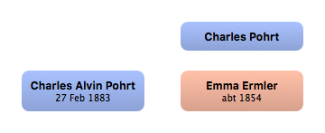

Home
Home
 Persons
Persons
 Families
Families
 Sources
Sources
 Statistics
Statistics
Charles Pohrt

Context

Parents
| Father | Date of Birth | Mother | Date of Birth |
|---|
Partners & Children
| Partners | Date of Birth | Children |
|---|---|---|
 Emma Ermler Emma Ermler
|
abt 1854 |
Charles Alvin Pohrt
|
Events
Facts
Media
Note
Sources
Kinships
| Name | Degree of Kinship | Date of Birth | Place of Birth | Date of Death | Place of Death |
|---|---|---|---|---|---|
| Partners | |||||
| Partner or Wife | abt 1854 | Adelheide? Adelsiede?, Austria | |||
| Children | |||||
| Son | 27 Feb 1883 | Rostov na Donu, Russia | 17 Oct 1947 | Ohio | |
| Grandchildren | |||||
| Granddaughter | abt 1906 | Niagra Falls, New York | |||
| Great grandchildren | |||||
| Great grandson | abt 1924 | Flint, Genesee, Michigan | |||
| Grandchildren-in-law | |||||
| Grandson-in-law | 17 Oct 1892 | Linc, Austria | |||